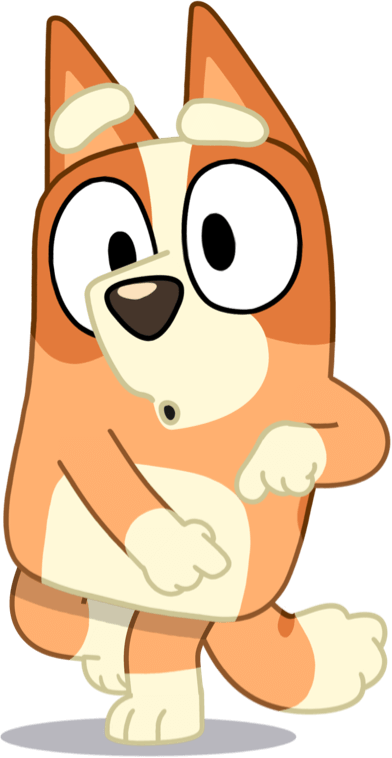

Bluey es una serie animada infantil australiana. Se estrenó en el año 2018.
La serie sigue a Bluey, una cachorra de Blue Heeler de seis años que se caracteriza
por su abundancia de energía, imaginación y curiosidad por el mundo.
Ella vive con su padre Bandit, su madre Chilli, y su hermana menor Bingo,
con quien comparte aventuras en mundos imaginarios.
Los demás personajes que aparecen representan a una raza de perro diferente.
Los temas generales del programa son la familia, el crecimiento y la cultura australiana.
Familia


Bluey es una cachorra pastora ganadera australiana de seis años a quien le encanta jugar.
Sus padres y su maestra le dan mucho tiempo para practicar, lo que significa que se ha vuelto
muy buena para inventar juegos. Se divierte mucho con su hermana Bingo.

Bingo es la hermana menor de Bluey. Es una pastora ganadera roja al igual que su mamá.
sus pasatiempos favoritos son jugar con su hermana e inventar juegos. Es un poco mas silenciosa
y tranquila que Bluey.

Bandit es el padre de Bluey y Bingo. Es un pastor australiano azúl. Es un gran trabajador
y un gran padre comprensivo y pedagógico.
Chilli es la madre de Bluey y Bingo. Recientemente regresó a su trabajo en
Seguridad aeroportuaria y hace malabares con la crianza de sus dos hijas pequeñas.
Mamá a menudo tiene un comentario bromista sobre las travesuras de sus hijas.
Rad es el hermano del medio de Bandit. Su hobbie preferido es el surf. Es soltero, aunque en
el capítulo Dos Niñeras conoce a la madrina de Bluey y se enamora.
Stripe es el hermano menor de Bandit. Tiene dos hijos: Muffin y Socks
Hija de Stripe, es prima de Bluey y Bingo. Es buena aunque demasiado consentida.
Hija de Stripe y hermana menor de Muffin. Aún no habla, aunque es muy participativa en
los juegos de sus primas y su hermana.
Chloe es la mejor amiga de Bluey. Chloe es una dálmata de pelaje blanco y negro.
Chloe es enérgica y le encanta jugar con Bluey y sus amigos en la escuela de Calypso.
Honey es amiga de Bluey de la escuela. Es una beagle con orejas de color miel oscuro.
Aunque sus padres son de Europa y hablan con acento inglés, Honey habla con acento australiano, ya que creció en el país.
Honey es asertiva, reflexiva y afectuosa, pero a veces le cuesta mantenerse al día con los juegos imaginativos de Bluey y Bingo.
Indy es un lebrel afgano con pelaje color canela, naranja y crema. Es super abierta e imaginativa.
Judo es una perra Chow Chow con pelaje beige y beige oscuro. Es vecina de los Heeler.
Vive sólo con su mamá. En su primera aparición, tenía una actitud caprichosa y mandona, lo cual molestaba,
sin embargo a lo largo de la serie fue mejorando su personalidad.
Mackenzie es un Border Collie blanco y negro. Las familias son amigas ya que en varios capítulos podemos
ver como intercambian comidas o se reunen a ver el juego. Mackenzie tiende a ser inquieto e incansable.
Snickers es un perro salchicha con pelaje marrón y bronce.
Snickers es amigo de la mayoría de los estudiantes de la escuela Calypso.